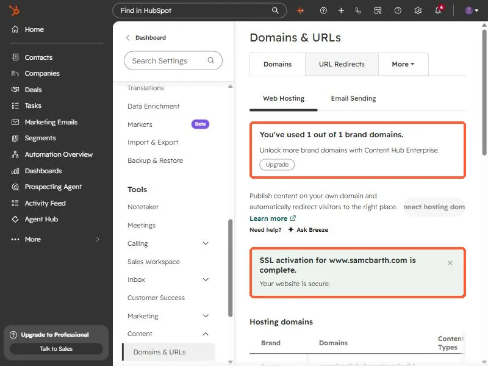
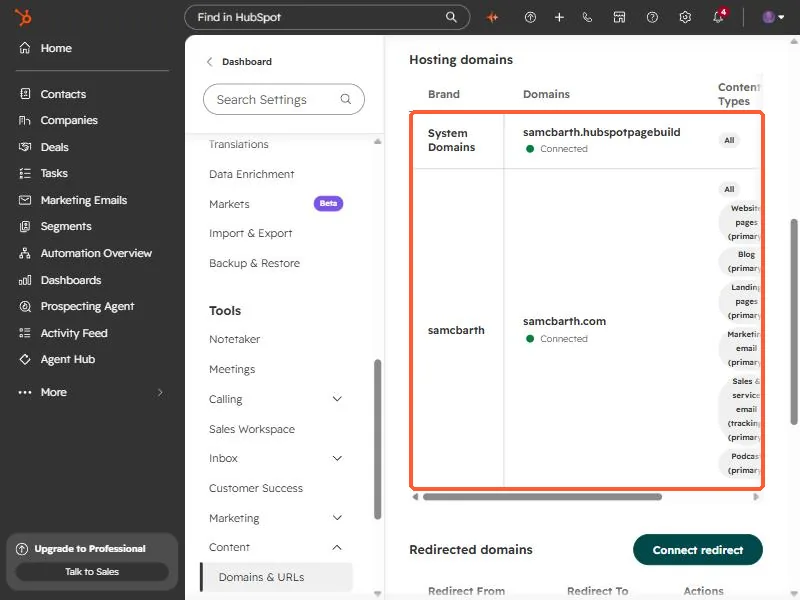

Short answer
Open Settings, Content, Domains & URLs and choose to connect a domain. A subdomain such as www needs a CNAME record at your DNS provider. A root domain needs A records. HubSpot then provisions SSL automatically, usually within minutes and up to a few hours. On my account the page shows "You've used 1 out of 1 brand domains" and offers an upgrade to Content Hub Enterprise for more.
1. Where it lives
Open Domains & URLs. The Domains tab has two parts, Web Hosting and Email Sending. This article is about Web Hosting. At the top is a notice about your brand domain allowance. On my account it reads that I have used 1 out of 1 brand domains, with an upgrade button for Content Hub Enterprise.


A brand domain is the middle part of the address, for example the name in www.yourname.com. The limit counts those, not each subdomain.
2. The list of connected domains
Scroll to Hosting domains. HubSpot always lists its own system domain, which ends in hubspotpagebuilder. Below it are the domains you connected, with their status and the content types each one serves. A green Connected status means the DNS is in place.


Each domain can be the primary domain for different content, such as website pages, blog, landing pages, or marketing email. Check that the right one is primary for each.
3. DNS and SSL
- A subdomain such as www connects with a CNAME record.
- A root domain connects with A records.
- SSL is turned on automatically after the domain connects, usually in a few minutes and up to four hours. The green message in the screenshot is HubSpot confirming SSL for my www address is complete.
If your DNS provider is not the one holding your registration, make the change where the DNS records are actually managed.